BrazilDataAPI: Access Brazilian Economic, Demographic, Environmental, and Geopolitical Data via RESTful APIs and Curated Datasets
Source:vignettes/BrazilDataAPI_vignette.Rmd
BrazilDataAPI_vignette.Rmd
library(BrazilDataAPI)
library(ggplot2)
library(dplyr)
#>
#> Attaching package: 'dplyr'
#> The following objects are masked from 'package:stats':
#>
#> filter, lag
#> The following objects are masked from 'package:base':
#>
#> intersect, setdiff, setequal, unionIntroduction
The BrazilDataAPI package provides a unified interface
to access open data from the BrasilAPI and the
REST Countries API, with a focus on Brazil. It
allows users to easily retrieve up-to-date information on postal codes,
banks, economic indicators, holidays, company registrations, and
international country-level data relevant to Brazil.
In addition to API-access functions, the package includes a collection of curated datasets related to Brazil, covering diverse domains such as demographics (male and female population by state and year), river levels in Manaus, environmental emission factors in São Paulo, Brazilian film festivals, and historical yellow fever outbreaks.
BrazilDataAPI is designed to support research, teaching,
and data analysis focused on Brazil by integrating public RESTful APIs
with high-quality, domain-specific datasets into a single, easy-to-use R
package.
Functions for BrazilDataAPI
The BrazilDataAPI package provides several core
functions to access real-time and structured information about Brazil
from public APIs such as BrasilAPI and REST Countries. Below is a list of
the main functions included in the package:
get_brazil_banks(): Get List of Banks in Brazilget_brazil_cep(): Get Address Information by Brazilian CEP (Postal Code) Example: get_brazil_cep(“89010025”)get_brazil_cnpj(): Get Company Information by CNPJ (Brazil) Example: get_brazil_cnpj(“19131243000197”)get_brazil_municipalities(): Get Municipalities of a Brazilian State from IBGE Example: get_brazil_municipalities(“SP”)get_brazil_rate_name(): Get Specific Brazilian Economic Rate by Name Example: get_brazil_rate_name(“CDI”)get_brazil_rates(): Get Official Interest Rates and Indexes from Brazilget_brazil_vehicle_brands(): Get Vehicle Brands from BrasilAPI (FIPE Data) Example: get_brazil_vehicle_brands(“motos”),get_brazil_vehicle_brands(“caminhoes”)get_country_info(): Get essential information about Brazil or any other country by its full name Example: get_country_info(“Brazil”),get_country_info(“brazil”),get_country_info(“Peru”)view_datasets_BrazilDataAPI(): Lists all curated datasets included in theBrazilDataAPIpackage
These functions allow users to access high-quality and structured
information on Brazil, which can be combined with tools
like dplyr, tidyr, and ggplot2 to
support a wide range of data analysis and visualization tasks. In the
following sections, you’ll find examples on how to work with
BrazilDataAPI in practical scenarios.
List official interest rates and indexes from the BrasilAPI
# Retrieves official interest rates and indexes from the BrazilAPI
brazil_rates_001 <- get_brazil_rates()
print(brazil_rates_001)
#> # A tibble: 3 × 2
#> nome valor
#> <chr> <dbl>
#> 1 Selic 15
#> 2 CDI 14.9
#> 3 IPCA 5.32Get Vehicle Brands from BrasilAPI (FIPE Data)
# A string indicating the type of vehicle. Must be one of "carros", "motos", or "caminhoes".
brazil_vehicles <- get_brazil_vehicle_brands("motos")
print(brazil_vehicles)
#> # A tibble: 94 × 2
#> nome valor
#> <chr> <chr>
#> 1 ADLY 60
#> 2 AGRALE 61
#> 3 APRILIA 62
#> 4 ATALA 63
#> 5 BAJAJ 64
#> 6 BETA 65
#> 7 BIMOTA 66
#> 8 BMW 67
#> 9 BRANDY 68
#> 10 byCristo 69
#> # ℹ 84 more rowsGet Municipalities of a Brazilian State
# A two-letter string representing the Brazilian state abbreviation (e.g., "SP", "RJ", "BA").
brazil_Municipalities <- get_brazil_municipalities("SP")
print(brazil_Municipalities)
#> # A tibble: 645 × 2
#> nome codigo_ibge
#> <chr> <chr>
#> 1 ADAMANTINA 3500105
#> 2 ADOLFO 3500204
#> 3 AGUAÍ 3500303
#> 4 ÁGUAS DA PRATA 3500402
#> 5 ÁGUAS DE LINDÓIA 3500501
#> 6 ÁGUAS DE SANTA BÁRBARA 3500550
#> 7 ÁGUAS DE SÃO PEDRO 3500600
#> 8 AGUDOS 3500709
#> 9 ALAMBARI 3500758
#> 10 ALFREDO MARCONDES 3500808
#> # ℹ 635 more rowsFemale Deaths by Age Group in Brazil
# Summarize total deaths by age and year
df_plot <- Brasil_females_df %>%
group_by(year1, age) %>%
summarise(total_deaths = sum(deaths, na.rm = TRUE), .groups = "drop")
# Plot: Deaths by age group over time
ggplot(df_plot, aes(x = age, y = total_deaths, color = as.factor(year1))) +
geom_line(size = 1) +
labs(
title = "Female Deaths by Age Group in Brazil",
subtitle = "Aggregated by year (year1)",
x = "Age",
y = "Number of Deaths",
color = "Year"
) +
theme_minimal() +
theme(
plot.title = element_text(face = "bold", size = 14),
legend.position = "bottom"
)
Dataset Suffixes
Each dataset in BrazilDataAPI is labeled with a
suffix to indicate its structure and type:
_df: A standard data frame._ts: A time series object._list: A list object.
Datasets Included in BrazilDataAPI
In addition to API access functions, BrazilDataAPI
provides several preloaded datasets offering insights into Brazil’s
demographic structure, environmental conditions, cultural events, and
public health records. Here are some featured examples:
Brasil_females_df: Brazilian Female Demographics & Mortality A data frame containing population counts and mortality information for females in Brazil, disaggregated by federal states and abridged age groups, for the years 1991 and 2000.manaus_ts: Monthly Average Heights of the Rio Negro at Manaus A univariate time series of monthly average river heights of the Rio Negro at Manaus. The series contains 1080 observations spanning 90 years, from January 1903 to December 1992.Yellow_Fever_list: Yellow Fever Outbreak in Brazil A list object containing information on the flow of Yellow Fever cases between five Brazilian states during the outbreak period from December 2016 to May 2017.
Conclusion
The BrazilDataAPI package provides a robust set of tools
to access open data about Brazil through RESTful APIs and curated
datasets. It includes functions to retrieve information about postal
codes, banks, economic rates, and company registrations via the
BrasilAPI, as well as international country indicators through
the REST Countries API. Additionally, it offers preloaded
datasets on Brazil’s male and female population by state and year, film
festivals, São Paulo’s emission factors, river data from Manaus, and
records of yellow fever outbreaks.